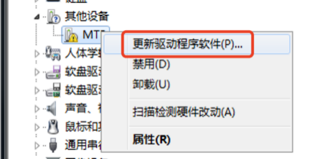
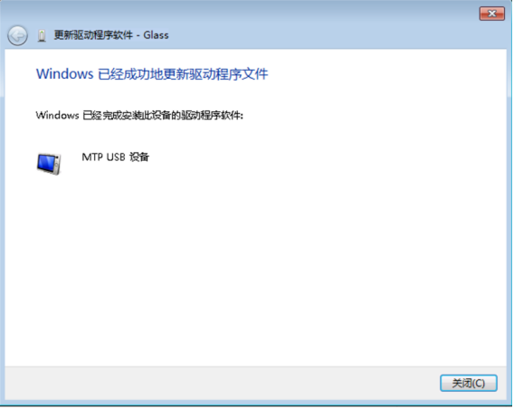
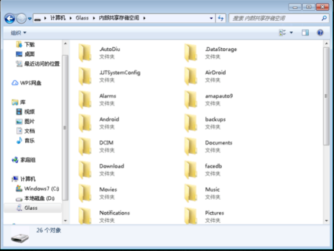

FAQ
一、常见开发问题
Q1: 开发眼镜上应用时，使用硬件h264编码失败？
A: 系统硬件mediacodec编码有size的限制，要求输入流的width必须为16的倍数，hight必须为2的倍数，否则编码将报错。如遇到硬件h264编码失败或崩溃，请检查输入流的size是否满足要求。
Q2: 开发眼镜上应用时，如何在应用内完全禁用语音助手功能
A: 请参考语音SDK使用说明关闭全部语音指令说明
Q3: 4G网络不通，无法获取GPS？
A: 序列号为082开头的设备，支持4G和GPS，081开头的设备，不支持4G和GPS；另外需注意，在主机通过调试口连接电脑时，4G和GPS将会断开，需要调试GSP或者4G功能时，需使用网络adb。
Q4: 录屏时录不到播放视频的画面？
A: 如果使用SurfaceView播放视频，则录屏/投屏时是无法录到视频画面的，想要录屏/投屏捕捉到播放视频的画面，必须使用TextureView播放视频。
Q5: 眼镜系统是32位还是64位？
A：眼镜系统是32位，如有第三方native库的依赖，必须提供arm-v7a的库。
Q6: 蓝牙搜索不到设备？
A: 我们系统设置里的蓝牙功能，搜索时进行了设备类型的过滤，仅显示蓝牙耳机设备。如有配对其他蓝牙设备的需求，可自行开发蓝牙搜索配对功能。
二、眼镜系统版本OTA升级方法:
Step 1: 信息查询
设置-->本机信息-->版本号、SN号，若版本号较低，则需要手动OTA升级
Step 2: OTA升级步骤
设置-->系统升级-->检查更新
备注：
- 如未检测到新版本，需找相关人员确认在SN是否在升级列表中；
- 需保证充电状态或电量在 50%以上!

检测到新版本
点击“更新”开始下载
升级成功，重启后生效。 原来额外安装在眼镜端的应用，如物体识别、绘本识别不受影响。
三、Windows连接眼镜
概述
- 由于win7系统内置MTP设备驱动不能自动适配二代眼镜的Dock设备，因此如需在win7系统连接Dock进行文件管理，需要手动安装兼容MTP驱动后才可正常使用。
- 绝大部分win8和win10系统能够支持MTP驱动自动安装，如此Dock连接电脑后，等待驱动自动安装完毕，即可在“此电脑”中找到Glass设备。如自动安装出现问题，也可参考第二节“操作步骤”手动安装驱动。
操作步骤
将二代眼镜的Dock通过USB线缆连接电脑，随后鼠标右键点击“计算机”，点击设备管理器（win7系统）：

注：此步骤截图为win7系统下，在win8和win10系统中，打开设备管理器需要右键点击“此电脑”，选择“管理”，并在弹出窗口左侧点选“系统工具”->“设备管理器”，右侧就会弹出“设备管理器”窗口，如下图：（后续的步骤2-13操作完全相同）

此时弹出窗口内会看到：“其他设备”一栏中存在“MTP”设备，且有黄色叹号下标，说明眼镜设备已连接，但未成功识别：

鼠标在MTP菜单上点击右键，选择更新驱动程序软件：

在弹出界面点击选择“浏览计算机以查找驱动程序软件”，如下图红框所示：
在弹出的界面选择“从计算机的设备驱动程序列表中选择”，如下图红框所示：

拖动右侧导航按钮，找到便携设备，鼠标左键选中，然后点击“下一步”：

在弹出窗口左侧厂商栏，鼠标左键点选“标准MTP设备”，随后在右侧型号栏中鼠标左键点选“MTP USB设备”，然后点击“下一步”：

此时会弹出驱动兼容性警告，点击“是”按钮：

随后弹出安装进度条界面，等待片刻：

如果安装成功，则会弹出成功界面

此时设备管理器的异常MTP设备消失，出现“便携设备”，其下有“Glass”：

关闭设备管理器，点击进入“计算机”，可以看到多出一个名称为“Glass”的便携设备：

双击Glass设备进入，就可以和正常硬盘一样，进行文件读写等操作：

在步骤9等待一段时间后，如果驱动安装失败，则会弹出如下界面，此时说明该系统内置驱动异常，请插拔Dock后重新操作1-9步骤。如果仍未安装成功，建议更换电脑使用，或联系技术支持人员进行协助。